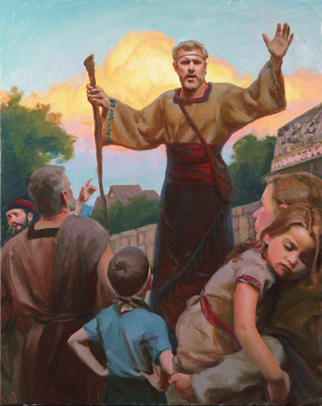

When we have faith to him and have repented we know we want to follow him. The fruit of those choices are always to commit to follow him. To kind of getting a glimpse of what it means to be baptised we will read from the Book of Mormon in Mosiah 18.
At the time Alma was preaching to the people that had gathered to hear him speak. Imagine a man standing by a lake pointing towards it, saying:
Behold, here are the waters of Mormon (for thus were they called) and now, as ye are desirous to come into the fold of God, and to be called his people, and are willing to bear one another’s burdens, that they may be light;
Yea, and are willing to mourn with those that mourn; yea, and comfort those that stand in need of comfort, and to stand as witnesses of God at all times and in all things, and in all places that ye may be in, even until death, that ye may be redeemed of God, and be numbered with those of the first resurrection, that ye may have eternal life—
Now I say unto you, if this be the desire of your hearts, what have you against being baptized in the name of the Lord, as a witness before him that ye have entered into a covenant with him, that ye will serve him and keep his commandments, that he may pour out his Spirit more abundantly upon you?